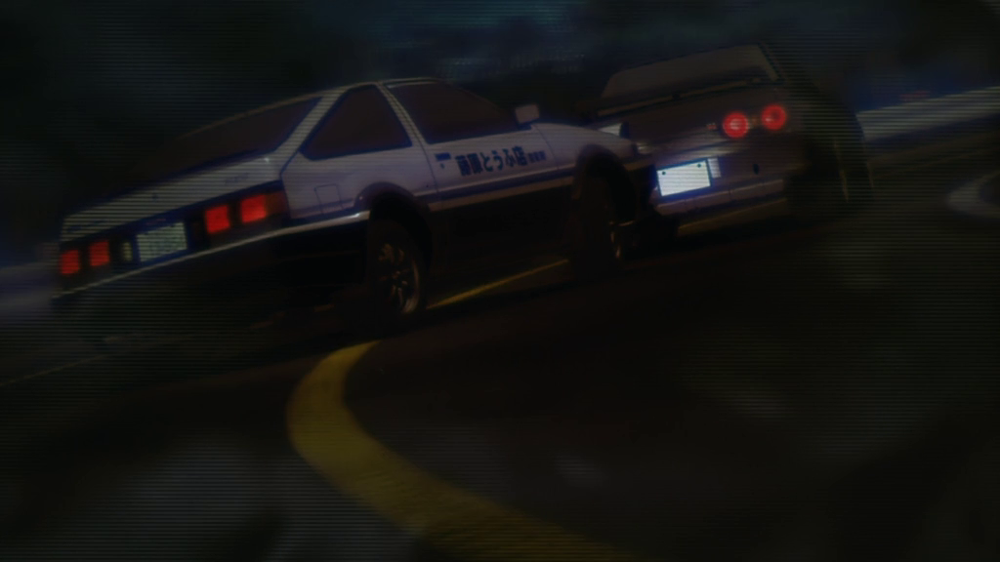

While speeding down the mountain at speeds around 100-120kph (around 60-70mph), cutting corners wherever you can, you find it hard to keep up but you manage to stay behind him. As you are barreling towards turn 10, you think you have a chance of passing. Do you...

Stay behind him and wait -
Try to pass around the outside -
Try to pass up the inside -